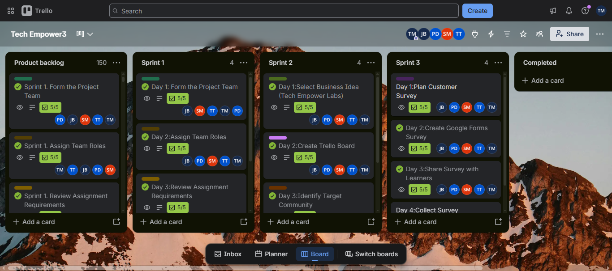

ASSESSMENT AREA 03
Product Backlog
A prioritised list of work needed for the product.
Evidence
The product backlog contains the features and work items planned for the Tech Empower Labs project. These items help the team organise work and decide what should be addressed first.
Product Backlog Evidence

My reflection
Creating and reviewing the product backlog helped me understand the importance of organising project work according to user needs and project goals. I learned that backlog items should be clearly described and ordered so the team can focus on the most valuable work.
In future projects, I would review the backlog regularly with the team and update the order when requirements or priorities change.